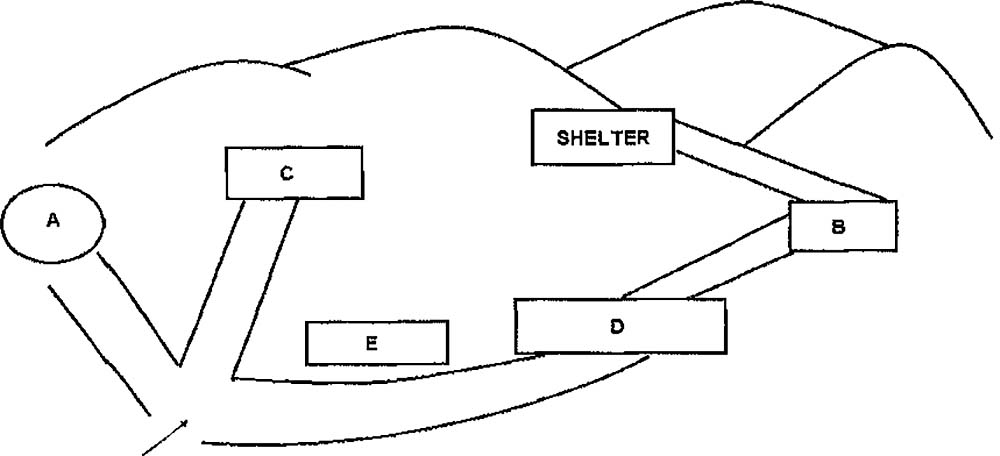

Good morning, everybody and welcome to Mount Rushmore! To start your visit I’m just going to give you a brief account of the history of the memorial before letting you roam about on your own. I won’t keep you long. OK?
Mount Rushmore is South Dakota’s top tourist attraction and features the heads of four United States Presidents – George Washington, Thomas Jefferson, Theodore Roosevelt and Abraham Lincoln. Each head is 18 metres tall, which is taller than the heights of eleven people combined! The sculptor initially wanted to depict the presidents from head to waist, but due to a lack of funding the construction had to stop before this vision could be realised. In total it cost the government $ 1 million (Q11) to sculpt the heads at Mount Rushmore.
Before the construction of the presidents’ heads, the mountain was just bare rock and forest attracting only a few hikers a year. The new carving at Mount Rushmore has become an iconic symbol of presidential greatness and has appeared in works of fiction and other popular works. The sculpture has also worked perfectly as a way to develop tourism (Q12), which was its intended purpose, and now attracts over two million people a year.
The original plan was to carve the Presidents’ faces into the granite pillars known as ‘The Needles’, however the sculptor soon realised that these rocks were too eroded and delicate to support such a large sculpture. Instead he chose to locate the carving at Mount Rushmore due to its grand appearance and brightly lit rock faces that experience maximum exposure to sunlight throughout the day as a result of the south-east (Q13) orientation. Upon seeing Mount Rushmore, the sculptor declared ‘America will march along that skyline.’
The name of Mount Rushmore also has an interesting history. The location was originally known as the Six Grandfathers, however during an expedition in 1885 the mountain was renamed after Charles E. Rushmore, a prominent New York lawyer (Q14) who joked that his annual treks to the mountain had earned him the right to have it named after him. Forty years after the mountain was renamed, Charles E. Rushmore donated $5,000 towards the sculpting of the president’s heads -the largest single contribution. In 1927 the construction work started and seven (Q15) years later was complete with no fatalities.
So that’s the history for you. If you’d like any more information, please feel free to ask me questions, or you can soak up the information from our fantastic guide book.

Now I’m going to give you a plan of the site and I’d just like to point out where everything is so that you can explore everything for yourself. We’re currently standing at the entrance, which is marked with the arrow on the map. If you follow the trail up to our left, you will find the information centre (Q16). There’s a great photo booth there where you can have your photograph taken with Mount Rushmore in the background for a fee of only $10 – what a great souvenir! In front of us is the refreshment centre where you can help yourselves to coffee, locally grown tea and a delicious selection of cold drinks and biscuits (Q17). Be sure to stay hydrated as it can get really hot up here! To our right not far up the trail is the gift shop (Q18). Here we sell copies of the guide book and it’s also the perfect place to pick up some small souvenirs for yourself, your family and friends. Now further up the trail behind the gift shop is a big stone building with a workshop (Q19). This is where all of our souvenirs are made by hand, which you can purchase in the gift shop like I said before. Some are even carved from pieces of rock taken from Mount Rushmore itself! If you carry on walking up the trail past the workshop you’ll find our state of the art visitor centre where you can find maps of the walking trails here at Mount Rushmore (Q20). Now for the real treat! After you have walked past the visitor centre, you can follow the trail up to the left, which will take you to our wooden shelter. From here you will have the best view of Mount Rushmore that there is – an experience not be forgotten! Right, if anyone wants a guided tour then I’m starting at the information centre. If you’d like to follow me, this way please.